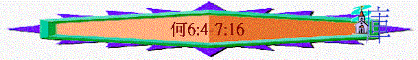

|
非人間的愛情－－怎能捨棄以色列 |
|||||||
|
怎能捨棄淫婦 |
怎能捨棄以色列 |
||||||
|
１－３ |
４－１４ |
||||||
|
去娶淫婦 |
追討淫行 |
再愛淫婦 |
以色列 的罪行 |
以色列 的被罰 |
耶和華 的無奈 |
耶和華 的審判 |
耶和華 的眷愛 |
ＩＩ．怎能捨棄以色列（４－１４）
Ｃ
．耶和華的無奈（６：４－７：１６）【主說，以法蓮哪，我可向你怎樣行呢，猶大阿，我可向你怎樣行呢．．．．】
１．望良善而無良善（６：４－１１）
ａ．深切的期望
i．重視生命的內涵多於外�堛漕ぅ^
＊【我喜愛良善】（太１２：７，彌６：８）
－ｇｏｏｄｎｅｓｓ
－ｆａｉｔｈｆｕｌｎｅｓｓ
－ｍｅｒｃｙ
－ｌｏｙａｌｉｔｙ
＊【不喜愛祭祀】（賽１：１０－１３）
ii．重視對神的認識勝於千萬的付出
＊【喜愛認識神】Ｗhｙ？
「．．．．使天下萬民都認識你的名，敬畏你像你的民以色列一樣．．．．」（王上８：４３）
「我兒．．．．你當認識耶和華你父的神，誠心樂意的事奉他．．．．」（代上２８：９）
「認識至聖者，便是聰明」（箴９：１０）
「．．．．因我以認識主基督耶穌為王寶，我為他已經丟棄萬事，看作糞土．．．．」（腓３：８）
「．．．．滿心知道神的旨意，好叫你們行事為人對得起主．．．．」（西１：１０）
＊【勝於燔祭】
ｂ．完全的失望
i．ｇｏｏｄｎｅｓｓ？
「因為你們的良善，如同早晨的雲霧，又如速散的甘露。」（何６：４）
ii．ｆａｉｔｈｆｕｌｎｅｓｓ？
「他們卻如亞當背約，在境內向我行事詭詐。」（ｖ７）
iii．ｍｅｒｃｙ？
「基列是作孽之人的城，被血沾染。強盜成群，怎樣埋伏殺人」
「祭司結黨也照樣在示劍的路上殺戮，行了邪惡。」（ｖ８－９）
iv．ｌｏｙａｌｉｔｙ？
「在以色列家我見了可憎的事，在以法蓮那�埵陴]行．．．．」（ｖ１０）
ｃ．命定的收場
i．「因此，我藉先知砍伐他們，以我口中的話殺戮他們．．．．」
ii．「猶大阿，我使被擄之民歸回的時候，必有為你所命令定的收場。」
２．想醫治而見其惡（７：１－７）
ａ．父神的矛盾
「我想醫治以色列的時候，以法蓮的罪孽．．．．就顯露出來．．．．」（７：１）
ｂ．罪惡的顯露
i．民間
「他們行虛謊，內有賊人入室偷竊，外有強盜成群騷擾」
ii．宮庭（王上１５：１０，１４，２５，３０）
（１）討悅首領（ｖ３）
（２）等候時機（ｖ４－５）
（３）謀朝篡位（ｖ７）
ｃ．犯罪的原因
i．不想念神
「他們心�堥瓣ㄚ銩Q我記念他們的一切惡．．．．」（ｖ２）
ii．不求告神
「他們中間無一人求告我」
３．遭吞吃仍不歸回（７：８－１３ａ）
ａ．攙雜的危機
「以法蓮與列邦人攙雜，以法蓮是沒有翻過的餅。」（ｖ８）
ｂ．不回轉原因
－Ｗhｙ？
i．不儆醒
「外邦人吞吃他勞力得來的，他卻不知道，頭髮斑白，他也不覺得」（ｖ９）
ii．驕傲
「以色列的驕傲當面見証自己，雖遭遇這一切，他們仍不歸向．．．．」（ｖ１０）
iii．無知（王下１７：３－４）
「以法蓮好像鴿子愚蠢無知，他們求告埃及，投奔亞述。」（ｖ１１）
ｃ．因果的報應
４．尋求神卻不誠心（７：１３ｂ－１６）
ａ．逼切的尋求
「．．．．在床上呼號，他們為求五穀新酒聚集」
ｂ．完全的虛假
i．初時：說謊
「．．．．我雖要救贖他們，他們卻向我說謊．．．．」
ii．後期：圖謀抗拒神
「我雖教導他們，堅固他們．．．．他們竟圖謀抗拒我．．．．」
iii．至終：不歸向神
「他們歸向，卻不歸向至上者．．．．」
ｃ．自吃的惡果
「．．．．他們如同翻背的弓，他們的首領必因舌頭的狂傲倒在刀下，這在埃及地必作人的譏笑」